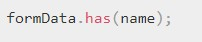

Допустим у нас есть форма. Сначала рассмотрим код JS
FormData() - Конструктор FormData() создает новые объект FormData, если проще - HTML-форму. В качестве аргумента передается существующая HTML-форма, на основе которой будет создана новая. Если ничего не указано, будет создана пустая форма.
Методы:Добавление нового текстового поля в форму:
Удаление элемента формы:
Получение значения элемента формы:
Проверка на наличие определенного элемента формы:
Изменение существующего элемента:
Для начала разберем откуда брать phpmailer и что надо добавлять, так как подключение AJAX (почему-то) отличается от обчного подключения
Сами файлы phpmailer качаем с официальной странице на GitHub
В папке с проекто создаем папку PHPMailer и в нее помещаем ВСЕ что было в архиве phpMailer
Далее создаем файл sendmail.php и в него помещаем вот такой код.
ВАЖНО!!!!!!!!!!!!!!!!!!! - в папке с проектом надо создать папку files, иначе файлы не будут приходить на почту